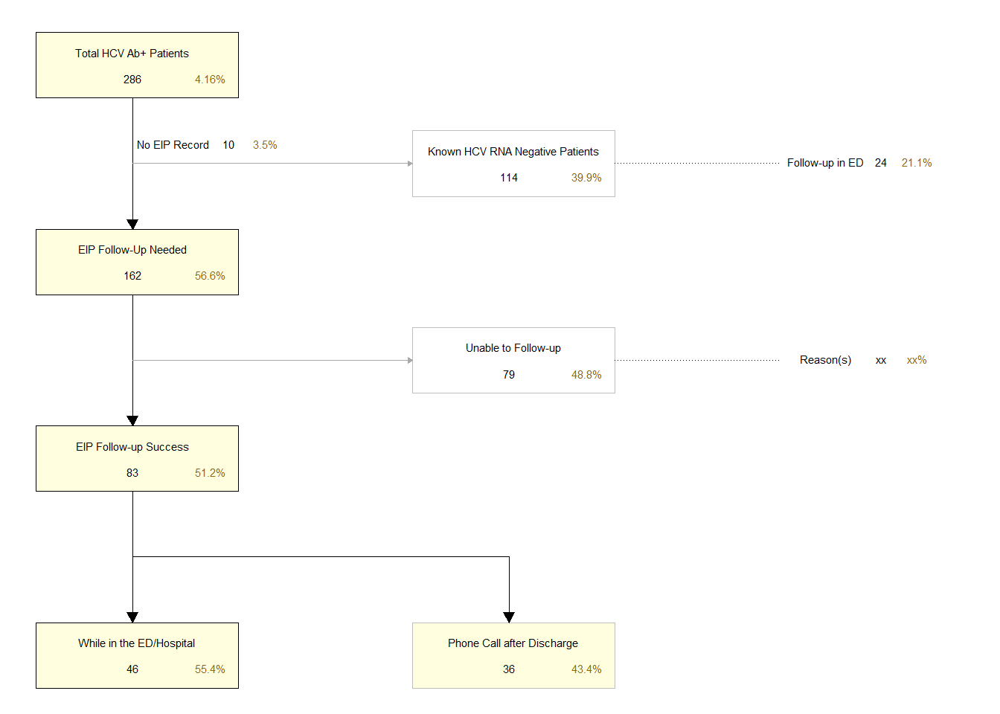

Hepatitis C Virus (HCV)
HCV Epic Dashboard
The Epic dashboard for HCV testing went live on January 2nd, 2024. This Epic dashboard lists all University of Cincinnati Medical Center Emergency Department (UCMC ED) based HCV testing ordered, showing the results in real time. EIP staff monitors the HCV dashboard for positive results and approaches patients directly while they are still in the ED, or the hospital, to provide results, education and information for additional testing (if required), as well as linkage to care through UC’s Clinical Pharmacy when appropriate.
The total daily testing numbers for HCV Antibody tests (HCV Ab) are shown in the table below, as well as a plot showing the daily trend in testing numbers. The overall HCV Ab positivity rate for the tests included in the HCV Epic Dashboard is described below the plot. The unique number of tests is determined by the Order ID for the test. The test is only included if the Order Status is “Completed” and the Lab Status indicates that it is the “Final Result” and the lab result is provided. The data is manually exported from the Epic HCV Dashboard each week with the data from the prior week by the EIP Data Team, and merged into a single data file used in this analysis, excluding duplicate records.
It is important to note that since the HCV Epic dashboard data is manually extracted from Epic at various times, the total number of tests for the most recent day may not all be counted. For example, if data is pulled in the afternoon, then the tests conducted in the morning are counted, but not tests conducted later in the evening for that day. The day that the data was pulled is noted by the date at the top of this report. Also, depending on when the data was pulled, not all test results are finalized, so the positivity rate and number of positive tests/patients may also be slightly different. However, this should only pertain to the day the data is pulled, and not prior days included in the analysis.
The total number of HCV Ab tests since the initiation of the HCV Dashboard is 6327 tests. The total number of positive HCV Ab results is 257 Ab positive tests, which is 4.06% of all HCV Ab tests conducted (257/6327).
Since EIP is meant to approach each individual that has a reactive HCV Ab test to provide education, the data provided in the remainder of this report will focus on the unique number of patients rather than number of tests, and those patients that were followed up with by our staff and referred to UC’s Clinical Pharmacy. Since the start of the HCV Dashboard, there have been a total of 6182 unique patients that have been tested for HCV Ab, with a total of 243 unique patients that were positive for HCV Ab (3.93% of all patients tested, 243/6182). The unique number of patients tested is determined by the medical record number (MRN) attached to the lab test. The MRN is the identifier used to match back with the EIP REDCap Database to link with the patient’s record to determine follow-up efforts described in the next section.
EIP Follow-up
A summary flow diagram for EIP’s follow-up efforts regarding those that are identified HCV Ab+ through the HCV Dashboard is provided below. You can zoom into this flow diagram by clicking on the image.

As already mentioned, there were a total of 243 HCV Ab+ patients from the Epic HCV Dashboard. There were a total of 9 patients (3.7% of all HCV Ab+ patients, 9/243) that currently do not have an EIP record created for follow-up regarding their HCV Ab+ result, which are in the process of being added. Based on further HCH RNA testing or recent medical record review, it is known that 94 patients are currently HCV RNA negative (38.7% of all those identified as HCV Ab+ through the HCV Dashboard, 94/243). While EIP is not calling all those identified as HCV RNA negative to discuss those results due to the additional effort that would be, we do try to notify these patients and provide additional education and interpretation of these results if we catch them while they are still in the ED/hospital. The total number of patients EIP has provided follow-up education after their HCV RNA results negative is 17 patients (18.1% of all those identified as HCV RNA negative, 17/94).
Therefore, the number of patients who were identified as HCV Ab+ but either are HCV RNA positive or do not have a RNA lab resulted was 140 patients needing follow-up education and referral (57.6% of all those HCV Ab+ from the Epic HCV Dashboard, 140/243). This means that EIP has been unable to follow-up with 73 patients who were HCV Ab+ and need follow-up results/education (52.1% of all those HCV Ab+ from the Epic HCV Dashboard needing follow-up, 73/140)
Out of those patients that needed follow-up, EIP staff were able to approach and provide results/education to 67 patients (47.9% of all those identified as HCV Ab+ through the HCV Dashboard needing follow-up, 67/140). EIP makes every attempt to approach the patient while they are still located in the ED or admitted to the hospital. The number of patients where EIP was able to initiate face-to-face contact while they were still in the hospital (whether in the ED or roomed elsewhere) was 32 patients (47.8% of all HCV Ab positive patients that were provided with education, 32/67). If EIP is unable to approach patients while they were still in the ED/hospital, then attempts are made to follow-up with them using the contact information collected during ED intake. The number of patients where EIP was able to contact them after discharge was 34 patients (50.7% of all HCV Ab positive patients that were provided with education, 34/67).
As part of EIP’s follow-up efforts, we try to ensure anyone who is HCV Ab+ has the necessary lab testing to know if they are currently infected with HCV by facilitating RNA testing when appropriate. The total number of patients that had a follow-up RNA test documented within their EIP REDCap record was 183 patients (71.2% of all those HCV Ab+, 183/243). As mentioned above, there were a total of 94 patients that were negative for HCV RNA, which is 38.7% of all those with a known HCV RNA result (94/183). For those patients that were tested for RNA, the total number of those that were found to be true positives for HCV was 85 patients (46.4% of all those tested for HCV RNA, 85/183). This is the total number of patients that will be used to determine who was successfully referred to the UC Clinical Pharmacy telehealth appointment system.
The EIP REDCap Database is currently set-up for documentation regarding referral to UC Clinical Pharmacy. However, there is still discussion regarding a job aide for proper flow of referrals and management for the telehealth appointments with UC Clinical Pharmacy. Until this is finalized, the data regarding these referrals will be ad hoc when needed.
Staff Coverage
In order to evaluate whether we have appropriate EIP staff coverage for this project, this section looks at the time that the HCV Ab test results are available and whether there is an EIP staff member dedicated for this project on staff. Therefore, we can know whether our staff is available to approach the patient in the ED/hospital when the lab results.
HCV Dashboard dataset does not include Lab Result times.
The result times for the labs are estimated using the Order Date/Time and estimated resulting time based on CHI lab data.
The HCV Dashboard does not include result times for the labs. Therefore, an average HCV Ab lab result time was calculated from CHI HCV Ab lab data and used here (CHI HCV Ab lab result times average is about 3 hours and 53 minutes). The HCV Ab dashboard lab result times were estimated by adding this average lab result time from the CHI lab data onto the Order Date/Time values for the dashboard labs. Since these are estimated lab result times, there is some variability in this data. Also, since these are estimates, EIP staff coverage times are estimated since those can vary slightly week to week.
Since these lab result times are estimates, they have been categorized into four categories to simplify the plot: Overnight (12am-5:59am), Morning (6am-11:59am), Afternoon (12pm-5:59pm), and Evening (6pm-11:59pm). Employee staff coverage is used an estimated based on these same parameters. Current staff coverage was used based on the staff shift schedule noted below:
RK: Monday-Thursday (7am-5pm; morning-afternoon) or Tuesday-Friday (7am-5pm; morning-afternoon), alternating weeks
JF: Monday and Friday (10am-10pm; morning-evening) and Tuesday (9am-9pm; morning-evening)
Therefore, it is estimated that EIP staff is available for this project during these times:
- Monday morning - evening
- Tuesday morning - evening
- Wednesday morning - afternoon
- Thursday morning - afternoon
- Friday morning - evening
The plot below shows the days and time periods of the estimated HCV Ab+ lab result times, as well as the times that there is EIP coverage. The frequency shows the total number of HCV Ab+ results for each day/time since the start of the project. The colored bars indicates that there is EIP staff scheduled during this time to respond to the HCV Dashboard and approach those patients who are HCV Ab+.
The table below summarizes the total number of HCV Ab+ results where an EIP staff member assigned for this project was on shift, and the percentage of the total HCV Ab+ results. This table indicates that EIP staff was available during 50.6% of the HCV Ab+ labs when they were estimated to have resulted and appear in the HCV Dashboard (130/257). Also, this table shows that EIP staff was not on shift for this project during 49.4% of the HCV Ab+ labs when they were estimated to have resulted (127/257).
| Total Frequency | Percent | |
|---|---|---|
| With EIP Coverage | 130 | 50.6% |
| Without EIP Coverage | 127 | 49.4% |
Additional Items still to add to this report.
Additional items still in development for this report include: Adding in a visualization for monthly testing/positivity numbers; Analyzing scheduling with UC Clinical Pharmacy Telehealth; Add Katie’s coverage; Add reasons for no follow-up (rsns linkage declined/prevented)